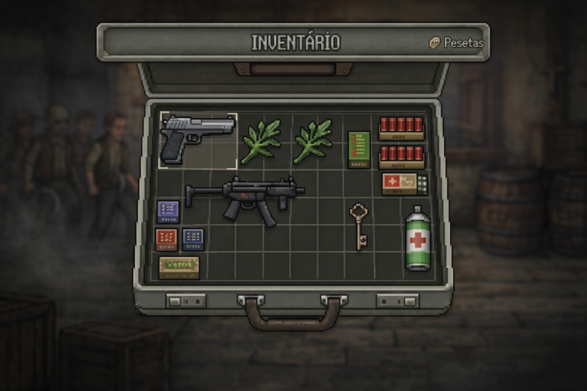

Gameplay
Perspectiva Side View
A perspectiva da câmera é em side view, posicionada lateralmente para acompanhar o personagem ao longo do cenário. Essa abordagem destaca a movimentação horizontal e a precisão dos saltos e ações, criando uma experiência mais direta e focada na jogabilidade.


Gestão de Recursos
A mala permite armazenar armas, munições e itens essenciais para a sobrevivência. O gerenciamento eficiente do espaço limitado é fundamental para enfrentar os desafios ao longo do jogo.